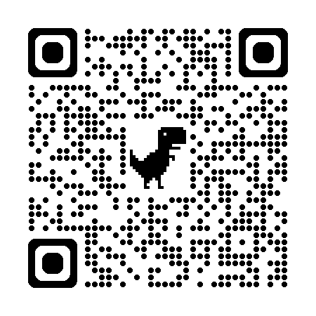

Home
Hi, I’m Emily!
I’m a motion + graphic designer who creates vibrant, mixed media, moving art to tell compelling stories and capture the audience’s attention.
Graphic Design
Pinoy Boba
Zeta Branding
Beary Seltzer
Luna Rebrand
Christmas Card
French Paper Booklet
Ravinia Poster Entry
Kodak Rebrand
Pinoy Boba

‘Pinoy Boba’ is a fictitious Filipino-run boba cafe which I created for a Web Design course!

I also curated the branding for Pinoy Boba, including the primary and secondary logos, colors, typography, and the merchandise mockups.

I created Pinoy Boba’s website in Figma, including an interactive mobile-centric version. I utilized my HTML and CSS skills to best structure the assets in Figma and create a functional UI.
Using auto layout, I created a responsive navigation button for each of the pages and auto resized the components horizontally as the window resizes.


The logo is a bold, simplistic wordmark with humanistic edges to represent each hand-crafted boba tea drink. The unique addition of the tapioca pearls makes the logo memorable and enticing.
Pinoy Boba’s colors are purple and tan. Tan signifies the tropical beaches of the Philippines and purple represents the popular Filipino desert flavor, ube. Both colors are muted for a more approachable and unified look while maintaining their tropical appearance.

Future Zeta

Zeta Tau Sigma is a Greek organization at Carthage College that hosts recruitment events each spring semester. In order to promote the events, I was tasked with creating a social media campaign titled "The Future is Zeta."
Inspired by other future-themed events, I created a moodboard to brainstorm futuristic aesthetics using Pinterest, a photo-sharing app primarily used by my target audience, 18-22 year-old women.

The final logo for the campaign features a sharp yet rounded, futuristic typeface. The shirt design includes stars to accent the space-based theme in a slanted manner to simulate motion through space.


To announce the event theme and branding via social
media, I designed a post including the logo in a sleek,
metallic texture to compliment a space-like, gradient
background.
The secondary text informs the viewer of the event using a
dotted, pixel-like typeface, allowing the logo to stand out.
The following poster hung around campus informed the audience of the time and place of the events. The secondary display font gave a pixelated, cyber charm to fit the trending ‘Cyber Y2K’ aesthetic.

Beary Seltzer

Beary is a fictitious fruit-flavored seltzer that I designed for a Typography course. I created a brand style guide including the various fonts and colors for a potential design team to follow. I designed the logo in Illustrator, a seltzer can mock-up in Photoshop, and the brand style guide in InDesign.
‘Beary’ is a play on words for the berry-flavored seltzer while referencing bears’ love for berries! I pen-tooled the logo from scratch, making a curved, playful outline. The primary colors are dark magenta, berry blue, and the secondary color is pastel purple. The fruit-inspired colors were color-picked from a strawberry and a blueberry.


Rubik is the brand font to match the playfullness and rounded appearance of the logo while maintaining legibility for the body copy and headlines.

The process involved sketching my initial ideas and brainstorming different ways to interpret Beary. While the bear logo was my initial design, the wordmark was the most succint and memorable.
The can mock-up features the strawberry flavored Beary seltzer and vector art of strawberries. The secondary color in the background allows the wordmark and flavor to stand out.

Luna

For a graphic design course project, I was tasked with
redesigning an existing brand. I redesigned Luna Bar
made by Clif Bar: energy bars geared towards women.
I replaced the dark blue with a dark cyan for a softer,
muted appearance. I wanted a more personable and
unique typeface to replace the straight-forward san
serif. The crescent moon to replace the ‘L’ is now more
emphasized.
The packaging design for the box mock-up focused on the
night sky theme. I designed the star-patterned background to
remain easy on the eyes while accenting pops of white stars.
The challenge I faced is making the package design more
appealing to women. I decided to brighten the colors and
make the sky theme cohesive and noticeable.


Christmas Card
As a personal project, I designed a Christmas card featuring my cats! The challenge was to, simultaneously, showcase their personalities while excusing Christmas spirit. I added Christmas decorations to their sillhouettes: the wreath and Santa hat. I also made their expressions cartoonish to exaggerate them. The chaotic forms surrounding the cats are painterly and messy to match their haphazardness and child-like nature. I designed a bell, in the same style, to add more Christmas spirit!

Motion Design
48 Hour Film Fest Trailer
Video Intro for Open Source Project
Experimental 4D Video
Promotional Marketing Video
Think Positive
Sweet & Complicated
Miracle on 34th Bird
Ravinia 2024
Sorority T-Shirt Design
Krause Kinetics Logo
80's Wave Krause Kinetic Logo
"Cool" Project Design
Boat
Flow
Golf
Vlog Gimbo Video
About Me
Proficiencies & Competencies
⭐ - Proficient written and verbal communication
⭐ - Creative and persuasive writing
⭐ - Adobe After Effects - Expert
⭐ - Adobe Premiere Pro - Proficient
⭐ - Quick learner
⭐ - People person
Carthage College
⭐ - Major: Graphic Design
⭐ - Minor: Film and New Media
⭐ - Aspiring Motion Graphic Designer
⭐ - Carthage Film Association – Director of Promotions
Warren Township High School
⭐ - High Honor Roll
⭐ - Yearbook Club Writer
⭐ - President of MECS (Environment Club)
⭐ - Symphonic Band 1
⭐ - Jazz Ensemble 1
⭐ - Students of Service
⭐ - Red Cross Club
Contact
